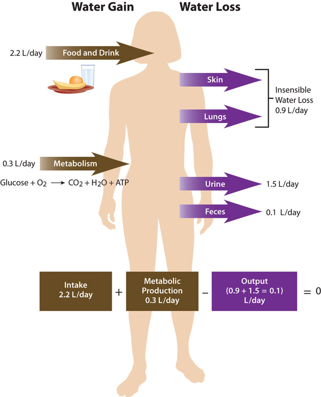

As you eat a bite of food, the salivary glands secrete saliva. As the food enters your stomach, gastric juice is secreted. As it enters the small intestine, pancreatic juice is secreted. Each of these fluids contains a great deal of water. How is that water replaced in these organs? What happens to the water now in the intestines? In a day there is an exchange of about 10 liters of water among the body’s organs. The osmoregulation of this exchange involves complex communication between the brain, kidneys, and endocrine system. A homeostatic goal for a cell, a tissue, an organ, and an entire organism is to balance water output with water input.
Total water ouput per day averages 2.5 liters. This must be balanced with water input. Our tissues produce around 300 milliliters of water per day through metabolic processes. The remainder of water output must be balanced by drinking fluids and eating solid foods. The average fluid consumption per day is 1.5 liters, and water gained from solid foods approximates 700 milliliters.
Figure 7.3 Daily Fluid Loss and Gain
The Food and Nutrition Board of the Institute of Medicine (IOM) has set the Adequate Intake (AI) for water for adult males at 3.7 liters (15.6 cups) and at 2.7 liters (11 cups) for adult females.Institute of Medicine Panel on Dietary Reference Intakes for Electrolytes and Water. Dietary Reference Intakes for Water, Potassium, Sodium, Chloride, and Sulfate. (Washington, D.C.: National Academies Press, 2005). http://www.nap.edu/openbook.php?record_id=10925&page=73. These intakes are higher than the average intake of 2.2 liters. It is important to note that the AI for water includes water from all dietary sources; that is, water coming from food as well as beverages. People are not expected to consume 15.6 or 11 cups of pure water per day. In America, approximately 20 percent of dietary water comes from solid foods. See Table 7.1 "Water Content in Foods" for the range of water contents for selected food items. Beverages includes water, tea, coffee, sodas, and juices.
Table 7.1 Water Content in Foods
| Percentage | Food Item |
|---|---|
| 90–99 | Nonfat milk, cantaloupe, strawberries, watermelon, lettuce, cabbage, celery, spinach, squash |
| 80–89 | Fruit juice, yogurt, apples, grapes, oranges, carrots, broccoli, pears, pineapple |
| 70–79 | Bananas, avocados, cottage cheese, ricotta cheese, baked potato, shrimp |
| 60–69 | Pasta, legumes, salmon, chicken breast |
| 50–59 | Ground beef, hot dogs, steak, feta cheese |
| 40–49 | Pizza |
| 30–39 | Cheddar cheese, bagels, bread |
| 20–29 | Pepperoni, cake, biscuits |
| 10–19 | Butter, margarine, raisins |
| 1–9 | Walnuts, dry-roasted peanuts, crackers, cereals, pretzels, peanut butter |
| 0 | Oils, sugars |
Source: US Department of Agriculture, Agricultural Research Service. 2010. National Nutrient Database for Standard Reference, Release 23. Nutrient Data Laboratory Home Page, http://www.ars.usda.gov/ba/bhnrc/ndl.
There is some debate over the amount of water required to maintain health because there is no consistent scientific evidence proving that drinking a particular amount of water improves health or reduces the risk of disease. In fact, kidney-stone prevention seems to be the only premise for water-consumption recommendations. You may be surprised to find out that the commonly held belief that people need to drink eight 8-ounce glasses of water per day isn’t an official recommendation and isn’t based on any scientific evidence! The amount of water/fluids a person should consume every day is actually variable and should be based on the climate a person lives in, as well as their age, physical activity level, and kidney function. No maximum for water intake has been set.
ThirstAn osmoregulatory mechanism to increase water input. is an osmoregulatory mechanism to increase water input. The thirst mechanism is activated in response to changes in water volume in the blood, but is even more sensitive to changes in blood osmolality. Blood osmolality is primarily driven by the concentration of sodium cations. The urge to drink results from a complex interplay of hormones and neuronal responses that coordinate to increase water input and contribute toward fluid balance and composition in the body. The “thirst center” is contained within the hypothalamus, a portion of the brain that lies just above the brain stem. In older people the thirst mechanism is not as responsive and as we age there is a higher risk for dehydration. Thirst happens in the following sequence of physiological events:
The physiological control of thirst is the back-up mechanism to increase water input. Fluid intake is controlled primarily by conscious eating and drinking habits dependent on social and cultural influences. For example, you might have a habit of drinking a glass of orange juice and eating a bowl of cereal every morning before school or work. Most American adolescents have a daily habit of soft-drink consumption. Soft-drink consumption is influenced by demographics, access to soft drinks, social impacts, and personal behavior.
As stated, daily water output averages 2.5 liters. There are two types of outputs. The first type is insensible water loss, meaning we are unaware of it. The body loses about 400 milliliters of its daily water output through exhalation. Another 500 milliliters is lost through our skin. The second type of output is sensible water loss, meaning we are aware of it. Urine accounts for about 1,500 milliliters of water output, and feces account for roughly 100 milliliters of water output. Regulating urine output is a primary function of the kidneys, and involves communication with the brain and endocrine system.
The kidneys are two bean-shaped organs, each about the size of a fist and located on either side of the spine just below the rib cage (Figure 7.4 "Kidneys"). The kidneys filter about 190 liters of blood and produce (on average) 1.5 liters of urine per day. Urine is mostly water, but it also contains electrolytes and waste products, such as urea. The amount of water filtered from the blood and excreted as urine is dependent on the amount of water in, and the electrolyte composition of, blood.
Kidneys have protein sensors that detect blood volume from the pressure, or stretch, in the blood vessels of the kidneys. When blood volume is low, kidney cells detect decreased pressure and secrete the enzyme, renin. Renin travels in the blood and cleaves another protein into the active hormone, angiotensin. Angiotensin targets three different organs (the adrenal glands, the hypothalamus, and the muscle tissue surrounding the arteries) to rapidly restore blood volume and, consequently, pressure.
First, angiotensin travels to the outer perimeter of the adrenal glands and stimulates release of the hormone aldosterone. Aldosterone travels back to the kidneys and stimulates the sodium-potassium pump. As a result of the pump’s work, the blood reabsorbs the sodium from the liquid that has already been filtered by the kidneys. Water follows sodium into the blood by osmosis, resulting in less water in the urine and restored fluid balance and composition of blood.
Next, angiotensin travels to the hypothalamus where it stimulates the thirst mechanism and the release of antidiuretic hormone. Antidiuretic hormone travels back to the kidneys where it increases water reabsorption.
Lastly, angiotensin targets smooth muscle tissue surrounding arteries, causing them to contract (narrow) the blood vessels, which assists in elevating blood pressure.
Figure 7.5

Sodium and fluid balance are intertwined.
Osmoreceptors (specialized protein receptors) in the hypothalamus detect sodium concentration in the blood. In response to a high sodium level, the hypothalamus activates the thirst mechanism and concurrently stimulates the release of antidiuretic hormone. Thus, it is not only kidneys that stimulate antidiuretic- hormone release, but also the hypothalamus. This dual control of antidiuretic hormone release allows for the body to respond to both decreased blood volume and increased blood osmolality.
Cells in the adrenal glands sense when sodium levels are low, and when potassium levels are high, in the blood. In response to either stimulus, they release aldosterone. Therefore, aldosterone is released in response to angiotensin stimulation and is also controlled by blood electrolyte concentrations. In either case, aldosterone communicates the same message, which is to increase sodium reabsorption and consequently water reabsorption. In exchange, potassium is excreted.
The mechanisms involved in regulating water input and output are intertwined with those controlling electrolyte balance. In a healthy individual, this multilevel coordinated control of fluid and electrolyte levels in the body ensures homeostasis. However, in a person with heart failure, the crosstalk between organs can have dire consequences. Heart failure results in a decrease in blood output from the heart, which lowers blood pressure. In response to the lower blood pressure the kidneys release renin, leading to the release of antidiuretic hormone. Antidiuretic hormone acts on the kidneys and increases water reabsorption, thereby increasing blood volume and pressure. This makes the heart work harder and exacerbates the heart condition. To block this response, people with heart failure are treated with drugs that block the kidneys’ compensatory response. Diuretics are drugs that act either by inhibiting the actions of antidiuretic hormone or by promoting sodium excretion in the urine. This increases water output and blood pressure is reduced. Diuretics, along with other drugs, are useful in treating heart failure and in decreasing blood pressure in people with hypertension.